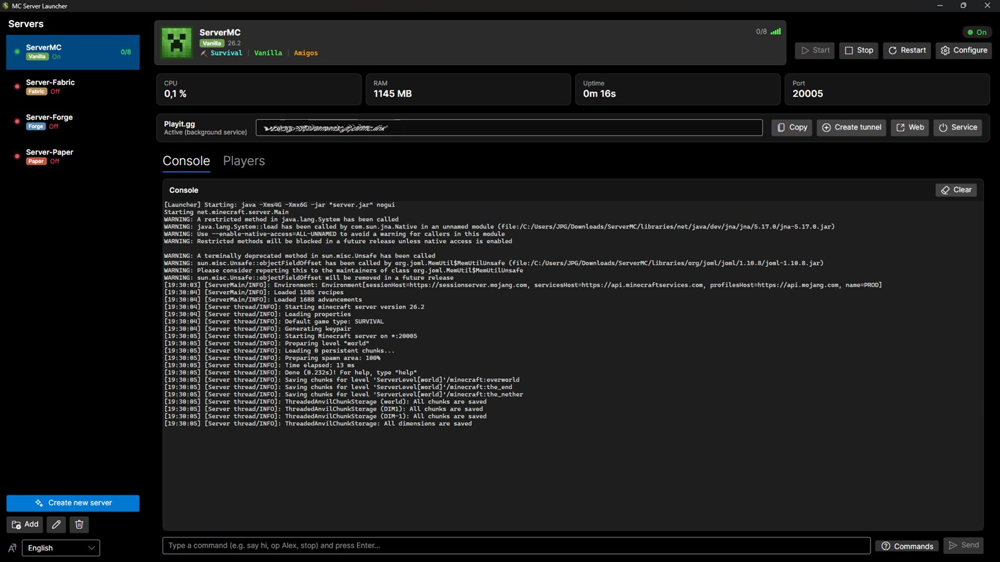

🧱
Create servers in 2 minutes
Pick a version and you're done: it downloads the official JAR, accepts the EULA and generates the world for you. Vanilla, Paper, Forge and Fabric.
Create, configure and manage Minecraft servers on Windows, Linux and macOS without touching the console. Modrinth mods, automatic backups and Internet access in a couple of clicks.

What are normally config files, commands and loose folders are buttons here.
Pick a version and you're done: it downloads the official JAR, accepts the EULA and generates the world for you. Vanilla, Paper, Forge and Fabric.
Search and install mods without leaving the app, filtered by your version and server type. Every download is verified.
Saves your world before every start and on stop, keeping as many copies as you want, with one-click restore.
Built-in Playit.gg tunnel: share an address and they join from anywhere. No router port forwarding.
Live CPU and RAM, console search, and OP, ban and whitelist management with buttons instead of commands.
If the server dies it restarts by itself and tells you why, reading the crash report. With desktop notifications.
From zero to playing in three steps, without typing a single command.
A normal installer for Windows, an AppImage for Linux or a DMG for macOS. No Java needed up front: the app finds it or downloads it.
Name it, pick the Minecraft version and the type. The app downloads the official files, verifies their checksum and generates the world.
Share the address with your friends and manage everything from the window: console, mods, players and backups.
10 and 11 · 64-bit
Get the .exeAppImage · x86_64
Get the AppImageApple Silicon and Intel
Get the .dmgInstall MC-ServerLauncher, click “Create server”, pick the version and type (Vanilla, Paper, Forge or Fabric) and the app downloads the official files, accepts the EULA and generates the world for you.
By hosting it yourself on your own computer. MC-ServerLauncher downloads the official server, configures it and keeps it running, and the built-in tunnel gives it a public address so your friends can join without a monthly fee or router port forwarding.
On your PC you pay nothing, there are no player or mod limits imposed by a plan, and the world is yours: the files are on your disk. In exchange, it is only available while your computer is on. A paid one is always online, but it costs a fee and usually caps RAM and mods.
Yes. It is free and open source: you can review the code on GitHub. Every download (Minecraft, Java, mods and the app's own updates) is checked against its official checksum before running.
No. The app includes a Playit.gg tunnel: it gives you a public address you can share, without touching your router settings.
Yes. There is an AppImage for Linux and a DMG for macOS (Apple Silicon and Intel), plus the Windows installer.
Yes, from the built-in Modrinth browser, which automatically filters by your Minecraft version and your server type.
It restarts by itself (up to three attempts) and shows you why, reading Minecraft's crash report, and notifies you as well.
Download MC-ServerLauncher and set up your server today.
Download MC-ServerLauncher